ÇALIŞMALARIMIZ
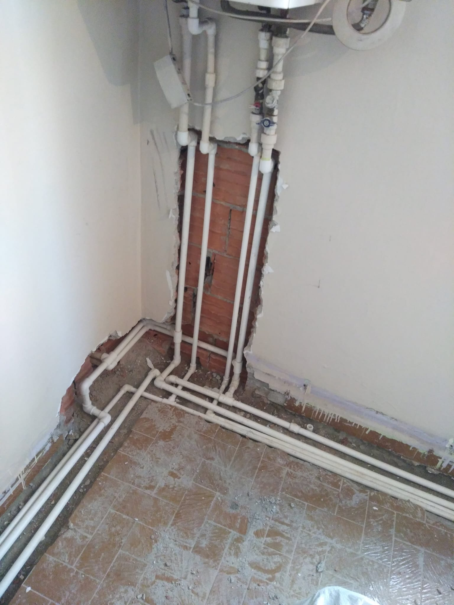
Temiz Su Tesisatı Yenileme ve Yeni Hat Kurulumu
Mevcut temiz su tesisatı, modern PPRC boru sistemi kullanılarak baştan sona yenilendi. Sıcak ve soğuk su hatları uzman ekibimiz tarafından özenle planlanıp uygulanarak tüm bağlantılar güvenli şekilde tamamlandı. Yapılan kalite kontrolleri ve basınç testleriyle sistem sorunsuz çalışır hale getirilerek müşterimize uzun ömürlü ve güvenilir bir tesisat altyapısı teslim edildi.
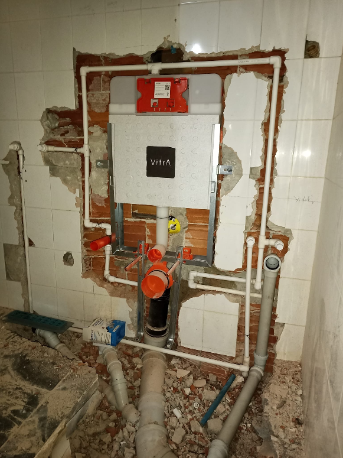
Modern Gömme Rezervuar ve Banyo Tesisatı Kurulumu
Yeni nesil gömme rezervuar sistemi ile banyo tesisatını baştan sona yenileyerek tüm su giriş ve gider bağlantılarını titizlikle tamamladık. Her aşamada kaliteli malzeme ve uzman işçilik kullanarak güvenilir ve estetik bir tesisat altyapısı oluşturduk.
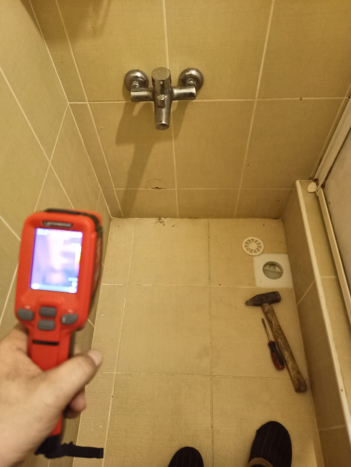
Termal Kamera ile Su Kaçağı Tespit Çalışması
Banyo zemininde meydana gelen gizli su kaçağı, termal görüntüleme cihazı kullanılarak kırma işlemi yapılmadan hassas şekilde tespit edildi. Kaçağın bulunduğu nokta kısa sürede belirlenerek gereksiz tadilatın önüne geçildi. Uzman ekibimizin gerçekleştirdiği profesyonel tespit sayesinde hızlı, ekonomik ve kalıcı çözüm süreci başarıyla başlatıldı.
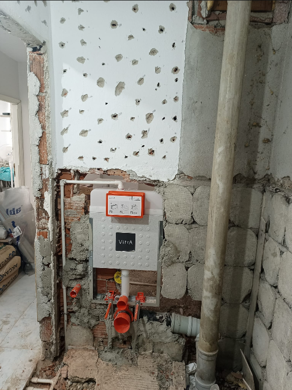
Eski Banyo Tesisatı Yenileme ve Gömme Rezervuar Altyapı Çalışması
Eski banyo tesisatı tamamen yenilenerek gömme rezervuar sistemi ve tüm altyapı bağlantıları profesyonel ekipmanlarla yeniden oluşturuldu. Doğru planlama, kaliteli malzeme ve uzman işçilik sayesinde hem estetik hem de uzun yıllar güvenle kullanılabilecek modern bir tesisat sistemi teslim edildi.
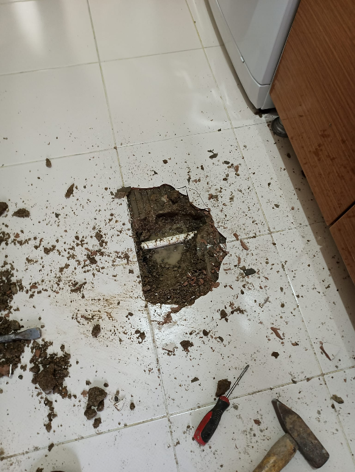
Mutfak Gider Tesisatı Yenileme ve Onarım
Mutfak gider hattında meydana gelen tıkanıklık ve altyapı sorununu zemine kontrollü müdahale ederek kısa sürede tespit ettik. Gerekli onarım işlemlerini titizlikle tamamlayarak tesisat sistemini yeniden sorunsuz ve güvenli şekilde kullanıma hazır hale getirdik.
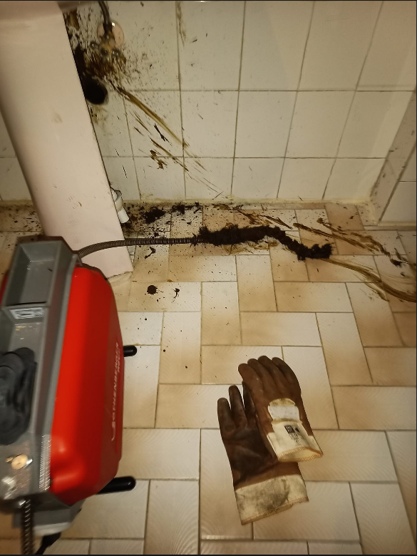
Robot Teknolojisi ile Gider Tıkanıklığı Açma Hizmeti
Modern robot cihazlarımız kullanılarak gider hattındaki tıkanıklık güvenli ve etkili yöntemlerle giderildi. Gereksiz kırma işlemlerine ihtiyaç duyulmadan yapılan profesyonel müdahale sayesinde tesisat sistemi eski performansına kavuşturuldu ve uzun ömürlü kullanım sağlandı.
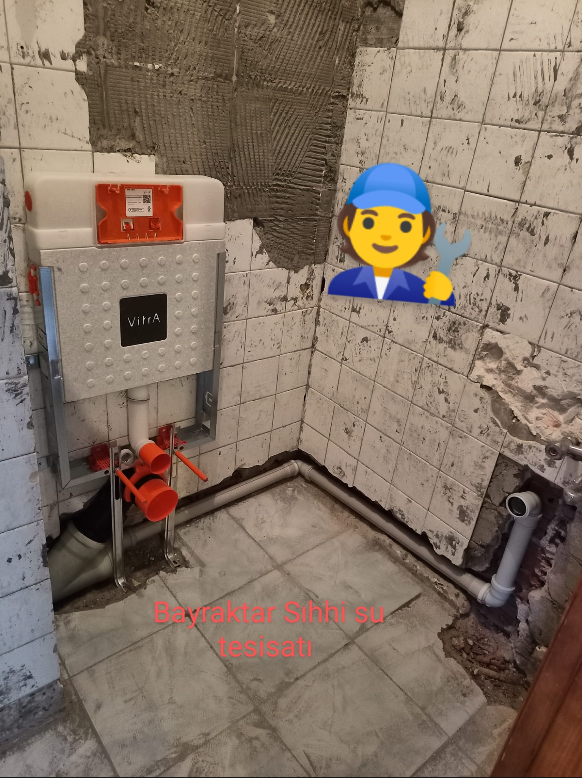
Gömme Rezervuar Altyapısı ve Banyo Tesisatı Yenileme
Gömme rezervuar sistemi ile temiz su ve atık su tesisat altyapısını standartlara uygun şekilde yeniden oluşturduk. Boru bağlantıları ekibimiz tarafından özenle planlanıp uygulanarak sağlam ve güvenilir bir altyapı hazırlandı. Kaliteli malzeme, profesyonel işçilik ve detaylı kontroller sayesinde uzun ömürlü, estetik ve sorunsuz bir tesisat sistemi müşterimize teslim edildi.
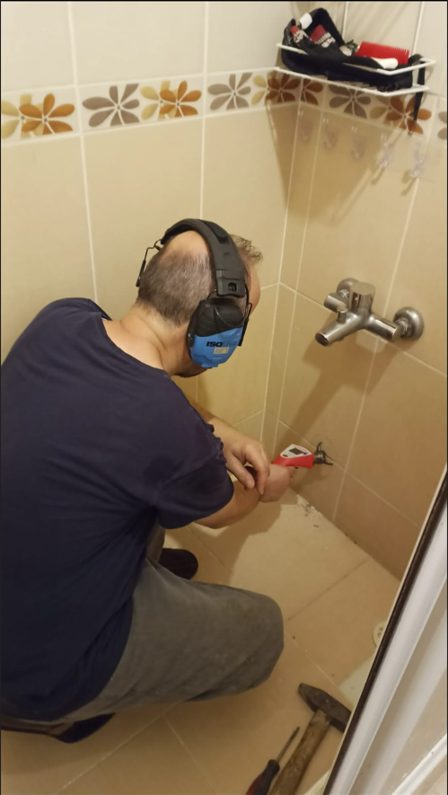
Profesyonel Su Kaçağı Tespit Hizmeti
Elektronik kaçak tespit cihazlarıyla banyo tesisatında meydana gelen su kaçağının yeri hassas şekilde belirlendi. Gereksiz kırma işlemleri önlenerek zaman ve maliyet tasarrufu sağlandı. Modern ekipmanlarımız ve uzman kadromuzla güvenilir, hızlı ve kalıcı çözümler sunmaya devam ediyoruz.
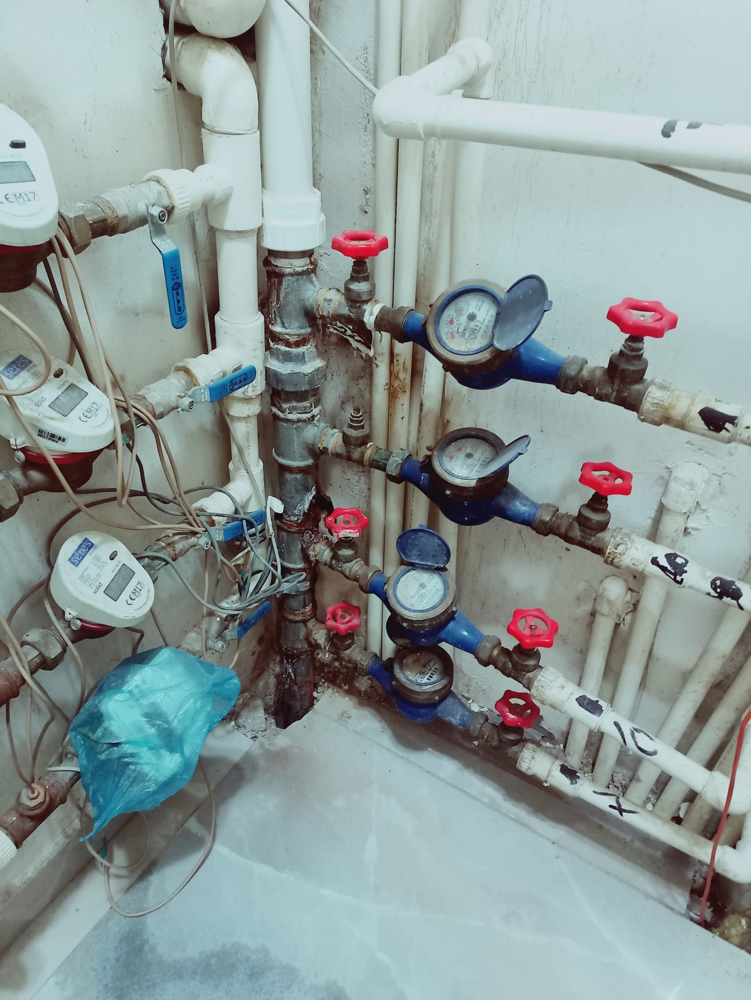
Ana Su Tesisatı ve Sayaç Bakım Çalışması
Ana su tesisatı üzerinde bulunan sayaç, vana ve bağlantı ekipmanlarının kontrol, bakım ve gerekli onarım işlemlerini profesyonel ekipmanlarımızla tamamladık. Sistem üzerinde detaylı testler gerçekleştirerek güvenli, verimli ve uzun ömürlü kullanım için gerekli iyileştirmeleri sağladık..
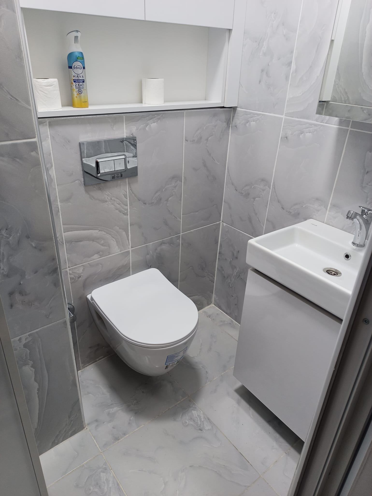
Gömme Rezervuar Dolum Arızası ve Şamandıra Onarımı
Gömme rezervuarın su depolama sisteminde meydana gelen dolum arızası uzman ekibimiz tarafından kısa sürede tespit edilerek giderildi. Arızalı şamandıra ve dolum mekanizması kontrol edilip gerekli bakım ve parça değişimi yapıldı. Yapılan testlerin ardından rezervuar sistemi yeniden sorunsuz çalışır hale getirilerek güvenli kullanım sağlandı.
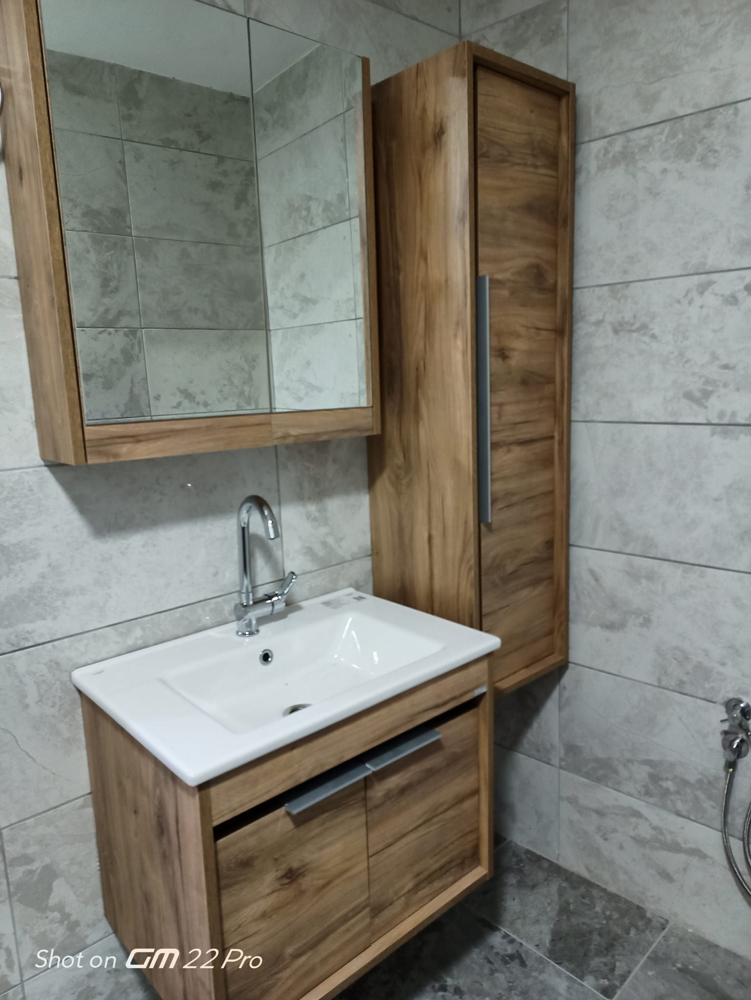
Lavabo Gider Borusu Arıza Tespiti ve Onarım Çalışması
Lavabo altında bulunan atık su gider borusunda meydana gelen çatlak ve sızıntı problemi kısa sürede tespit edilerek onarıldı. Hasarlı boru bağlantıları kaliteli malzemelerşe yenilendi ve sistem kontrollerden geçirildi. Yapılan profesyonel müdahale sayesinde lavabo tesisatı yeniden güvenli, sızdırmaz ve sorunsuz şekilde kullanıma hazır hale getirildi.
Klozet Tıkanıklığı Açma Çalışması
Klozet giderinde oluşan tıkanıklığa profesyonel ekipmanlarla müdahale ederek sorunun kaynağını tespit ettik. Gider hattına zarar vermeden yapılan çalışma sayesinde klozetin yeniden sağlıklı ve sorunsuz şekilde çalışması sağlandı. Uzman ekibimiz, hızlı müdahale ve kalıcı çözüm anlayışıyla işlemi güvenli şekilde tamamladı.